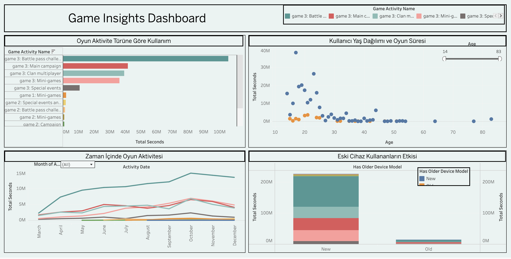

Project 3 – Game User Behaviour Dashboard (Tableau)
Explanation (Value-Driven & Trust-Building)
This analysis examines player behaviour in a mobile or online game in depth, revealing critical insights into user loyalty, play-time, device preferences and seasonal usage patterns.
What does this analysis deliver?
- Shows how different age groups interact with game features and which ones they prefer most.
- Uncovers behavioural metrics such as total play-time, activity levels and churn tendencies.
- Seasonality trends allow you to time in-game events or campaigns for maximum impact.
- Analysing devices used helps technical teams decide where to focus optimisation efforts.
- Comparing playing styles across age segments enables creation of highly targeted content.
Outcome: A powerful roadmap for studios that want to enhance player experience and build long-term loyalty.
Recommendations
- Offer age-specific content and achievement-oriented quests to groups with the longest play-time.
- Schedule special events and promotions for seasons with natural spikes (e.g. summer holidays, Christmas).
- Run targeted win-back campaigns based on device and age data of churned users.
- Optimise loading times, performance or graphics settings per device type.
- Create ongoing segment-based user profiling to monitor behaviour continuously.
- Add simpler content or tutorial videos for segments with low engagement.
Technical Analysis
- Tool: Tableau Public
- Data: Player activities, age, device type, session duration
Dashboard Components:
- Age-Group Activity Distribution (Bar / Heatmap)
- Comparisons of play-time and activity frequency by
age_group - Highlights the most active cohorts
- Comparisons of play-time and activity frequency by
- Average Play-time by Device (Bar / KPI)
- Matches
device_typewithavg_session_duration - Examines performance differences across Android / iOS / Tablet
- Matches
- Seasonal Usage Change (Line Chart)
- Analyses monthly sessions and duration
- Identifies periods of increase / decline
- Engagement in Game Activities (Treemap / Stacked Bar)
- Compares user interactions by
activity_type - Reveals the most popular features and modes
- Compares user interactions by
- Behaviour of Churned Users (Donut / KPI)
- Segments users whose last activity is in the past
- Analyses behaviour patterns before churn
Interactive Features: Multi-layer dashboard with filters for age, device and date; rich tool-tips and segment comparisons on every visual.
Tool Badge:
Tableau